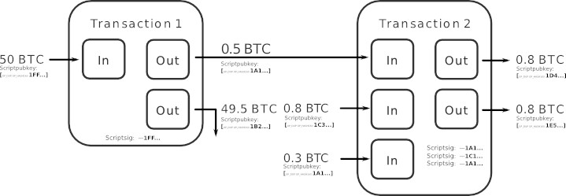

Концепция миксинга Биткоина восходит как минимум к 2010 году, когда на Bitcointalk и в различных онлайн-сообществах начали обсуждать необходимость улучшения приватности и соответствующих функций. Первый миксер Биткоина, известный как Bitcoin Laundry, также называемый BitLaundry, предположительно был запущен примерно в это время. Bitcoin Laundry позволял пользователям скрывать свои средства, отправляя Биткоины сервису и получая взамен другие Биткоины, пересланные сервисом.
Первый миксер Биткоина, использовавший слепые подписи, назывался Blindbitcoin и был анонсирован в июне 2011 года. Слепые подписи — это криптографический процесс, созданный Дэвидом Чаумом, который скрывает содержимое сообщения перед тем, как оно подписывается цифровой подписью, например DSA или ECDSA в случае Биткоина. Идея использовать переменные комиссии в миксерах была предложена в июне 2012 года — примерно в то же время произошёл первый взлом миксера и второй.
Для читателей, которые хотят глубже разобраться в системе учётных данных Chaumian, у нас есть отдельное объяснение механизма слепых подписей.
Иронично, но тот миксер запустил страницу для подачи заявок, где пользователям предлагалось пройти проверку личности, чтобы вернуть свои средства. Не спрашивайте, как до этого дошло. В наше время такое было бы немыслимо. Даже Blockchain.com тогда запускал собственный миксер (сюрприз!).
Также стоит отметить, что в списке миксеров Биткоина ни один из этих сервисов не указан, поскольку они, по-видимому, были закрыты очень давно — по крайней мере своими владельцами, а не правительством.
Если вы хотите сравнить те ранние сервисы с современными кастодиальными решениями, обратитесь к обзору централизованных миксеров.
Использование CoinJoin Биткоин-миксерами
Подробный разбор кошельков CoinJoin, комиссий и рисков теперь размещён в разделе Объяснение миксинга CoinJoin. Этот раздел остаётся лишь кратким напоминанием о том, как возникла сама концепция.

Со временем, по мере роста спроса на решения для приватности, на рынке появлялось всё больше миксеров Биткоина. Они предлагали различные алгоритмы и методы для разрыва связи между отправителем и получателем Биткоинов. Некоторые миксеры сосредоточились на реализации CoinJoin, техники, созданной бывшим разработчиком Bitcoin Core Грегом Максвеллом, которая объединяет несколько транзакций в одну, тогда как другие использовали различные подходы для достижения той же цели.
Чтобы дать представление о теории, на которой основана работа CoinJoin, приведём описание самого Грега Максвелла.
«Подписи, по одной на вход, внутри транзакции полностью независимы друг от друга. Это означает, что пользователи Биткоина могут договориться о наборе входов для расходования и наборе выходов для оплаты, а затем индивидуально и независимо подписать транзакцию и позже объединить свои подписи. Транзакция не является действительной и не будет принята сетью, пока не будут предоставлены все подписи, и никто не подпишет транзакцию, которая его не устраивает».
Грег Максвелл
Именно независимость входов транзакции делает CoinJoin возможным. Однако вместо повторного объяснения технических деталей здесь мы направляем читателей в раздел Объяснение миксинга CoinJoin, где рассматриваются современные кошельки, рабочие процессы PSBT и модели угроз.
Хрупкость ранних миксеров
Эти ранние сервисы были довольно хрупкими — многие хранили средства пользователей на Mt. Gox, исчезали, когда администраторы теряли интерес, или откровенно обманывали клиентов. В обзоре централизованных миксеров объясняется, как современные кастодиальные миксеры решили эти операционные проблемы с помощью правильного управления ликвидностью и мультиподписных хранилищ.
LocalBitcoins и начало частных обменников
Когда LocalBitcoins открылся в июне 2012 года, это была первая P2P-площадка такого типа. В некотором смысле она стала предшественником частных обменников в том виде, в каком мы знаем их сегодня. Почему это важно? Потому что в частном обменнике покупатель и продавец напрямую обмениваются криптовалютами друг с другом. Также можно было торговать и фиатом, но это выходит за рамки данного сайта.
Ещё тогда люди достаточно доверяли друг другу, чтобы проводить прямые сделки на форумах. Когда PayPal запретил продажи Биткоина, LocalBitcoins стал шаблоном для второй волны частных обменников, на которые сегодня опираются миксеры.
Ранняя практика занесения компаниями Биткоинов в чёрные списки
К 2015 году платёжные процессоры, такие как BitPay, начали отклонять Биткоины, связанные с миксерами, что стало сигналом к росту заморозок на биржах и аутсорсинга блокчейн-аналитики. Современную версию этих практик и способы реагирования на них мы рассматриваем в разделе Заморозки на биржах после миксинга.
Попытки встроить миксеры в Биткоин
В годы после краха Mt. Gox несколько участников сообщества предлагали идеи по встраиванию миксинга непосредственно в основной клиент Биткоина. В одной из заметных тем Casascius описывал механизм ретрансляции, при котором узлы с поддержкой кошелька обмениваются списками своих UTXO и автоматически формируют транзакции CoinJoin, которые обе стороны подписывают и отправляют в сеть. Если бы разработчики Bitcoin Core реализовали нечто подобное, отдельные миксеры были бы не нужны, поскольку каждый кошелёк мог бы перемешивать монеты по запросу. На практике эта идея так и не получила широкого развития — частично потому, что кошельки SPV, аппаратные устройства и биржи KYC вытеснили инструменты приватности на периферию экосистемы, а частично потому, что альткоины, такие как Monero, воспользовались возможностью встроить кольцевые подписи с самого начала.
Восхождение Monero как альтернативы
Monero был запущен в апреле 2014 года с встроенными кольцевыми подписями, скрытыми адресами и обязательными миксинами, основанными на техническом документе CryptoNote, написанном под псевдонимом Nicolas van Saberhagen. Кольцевые подписи позволяют группе подписывать транзакцию, не раскрывая, какой именно участник её фактически авторизовал, что даёт Monero уровень приватности по умолчанию, который Биткоин может лишь имитировать с помощью внешних инструментов. Несмотря на награду IRS в размере $625 000 за попытку «взломать» Monero, аналитические компании по анализу блокчейна неоднократно терпели неудачу в попытках раскрыть его архитектуру. Именно поэтому Monero стал валютой выбора на многих даркнет-маркетах. Каждый раз, когда кто-то утверждает, что «Биткоин используется только преступниками», можно указать на разоблачения миксеров Биткоина и напомнить, что сегодня серьёзная анонимизация чаще всего связана именно с Monero.
JoinMarket и практическое программное обеспечение CoinJoin
К началу 2015 года разработчики ПО с открытым исходным кодом запустили JoinMarket — кошелёк и координационный стек, построенный на базе libbitcoin, который позволяет любому пользователю запускать ботов-мейкеров и зарабатывать комиссии, помогая тейкерам проводить CoinJoin. JoinMarket поставляется как с интерфейсом командной строки, так и с интерфейсом Qt, по-прежнему активно поддерживается и даже поддерживает PayJoin для CoinJoin-транзакций между двумя участниками. Его популярность показала, что инструменты приватности могут успешно развиваться вне Bitcoin Core, и проложила путь для таких решений, как Whirlpool и Wasabi, которые приняли похожие модели.

Автор
NotATether
Исследователь приватности Биткоина и куратор BitMixList. Специализируется на истории миксеров, хронологии правоприменения и практических методах обеспечения приватности для пользователей, работающих в юрисдикциях с высоким регуляторным давлением.